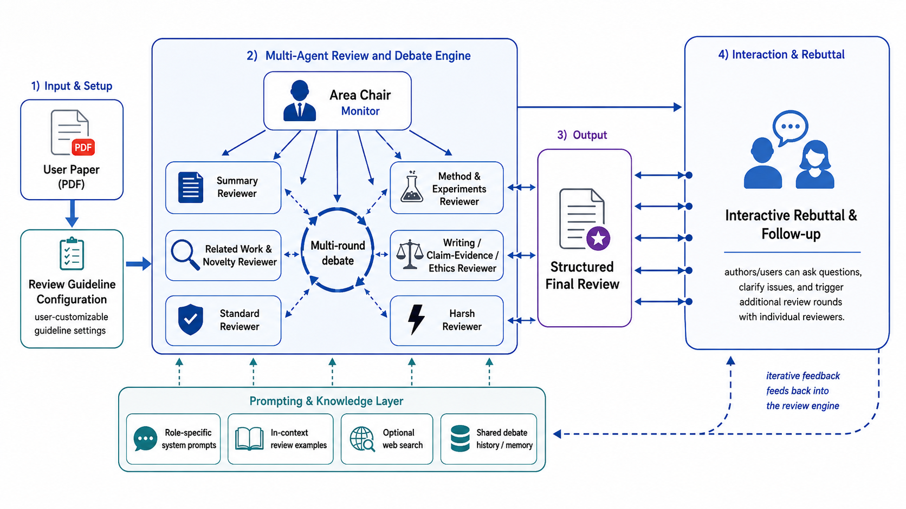
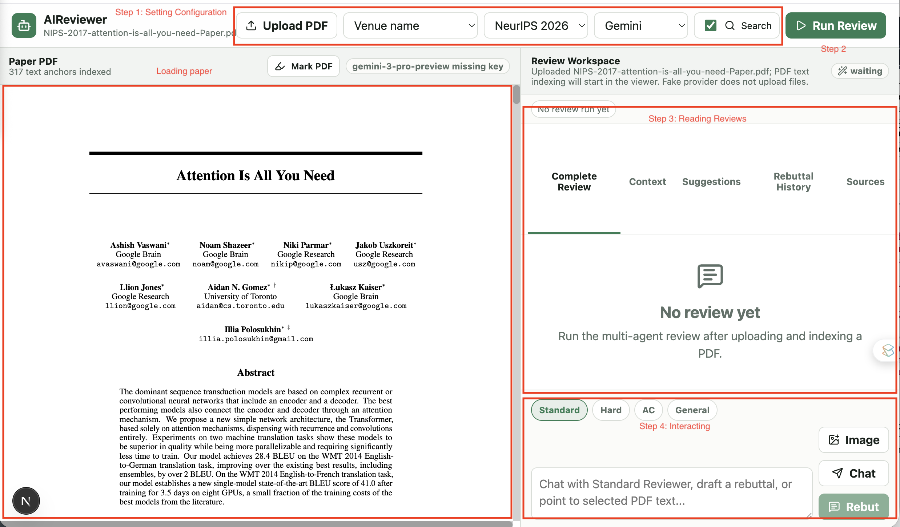
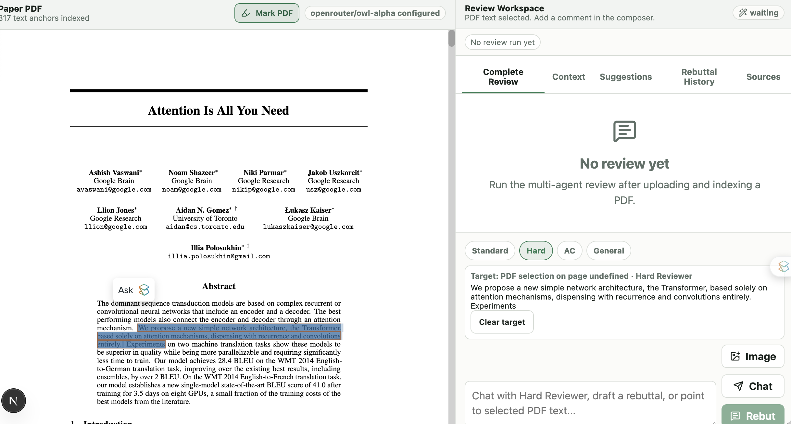
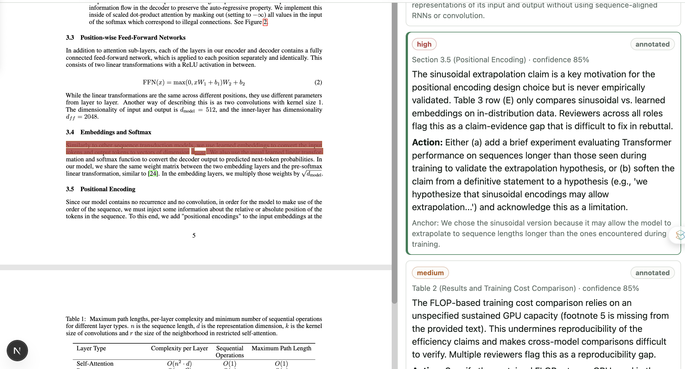
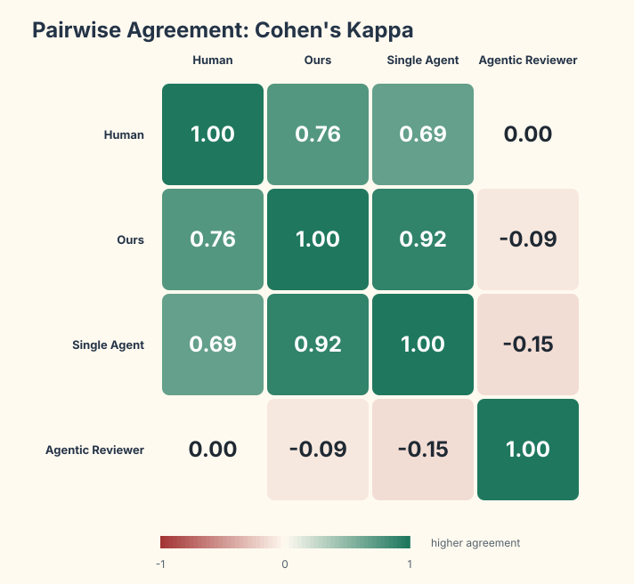
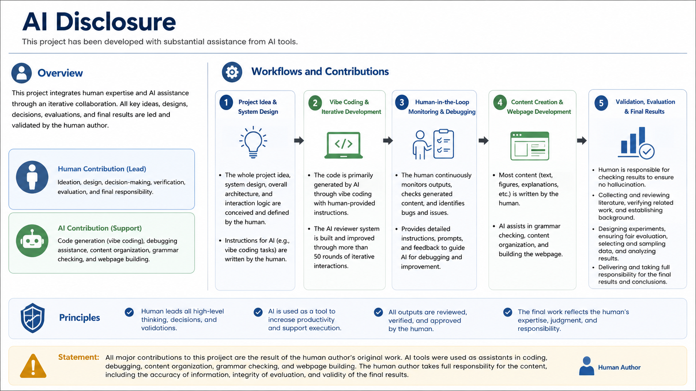

CMSC 33231 Writing with AI Course Project
Debate and Rebuttal: Multi-Agent Reviewer for Pre-Submission Manuscript Polishing
University of Chicago
Existing agent-based AI reviewers focus on generating review text that resembles conference feedback. That framing misses the more useful author need: writing a strong paper. In this project, we narrow the goal to helping authors improve a manuscript before submission and increase its chance of acceptance. We build an interactive review system that uses multiple agents to produce helpful reviews, debate uncertain judgments, and let authors respond through multi-round rebuttal. The system gives suggestions linked to manuscript sentences, supports venue-specific guidelines, and helps authors distinguish actionable problems from noisy or unfair reviewer complaints. Case studies and a small quantitative evaluation suggest that multi-agent debate and rebuttal interaction can produce fairer judgments and more useful improvement suggestions than a single-pass AI review.
The central claim of this project is that an AI reviewer should not be positioned as a generator of ready-made conference reviews. It should be positioned as a pre-submission writing and research assistant that helps authors polish papers, strengthen experiments, clarify claims, and improve the quality of the research project itself.
With the emergence of LLMs and agentic systems, several AI paper review tools have appeared, including AgenticReviewer and multi-agent review generation systems. Given an academic paper, these systems can generate human-like reviews that follow a guideline template [1][2][3]. However, the most important use of an AI reviewer is not to replace conference reviewers. It is to help authors produce stronger research papers, more concrete work, and more rigorous experimental evidence before submission.
From the reviewer side, many conferences explicitly restrict fully AI-generated reviews. For example, conferences such as ICML may allow reviewers to use AI as an assistant, but they do not allow fully AI-generated reviews. ICML has discussed violations of LLM review policies and has injected artifacts into PDFs to detect whether reviewers directly copy and paste AI reviews. Submitting fully LLM-generated reviews violates academic integrity policies; such reviews risk removal, and papers authored by those reviewers may face desk rejection. From the author side, a one-shot AI review is useful only if it leads to clearer claims, stronger experiments, better positioning, and a higher chance of acceptance. NeurIPS also provides each paper with a voucher for paper-assistant tooling to help authors improve their manuscripts, which points to the same shift: AI review should support author revision, not manufacture official reviews.
Existing tools often optimize for alignment with human reviews in soundness, tone, and score distribution, but human reviews themselves can be noisy, guideline-inconsistent, or factually wrong. We therefore define the objective from the author perspective: identify flaws that reviewers are likely to criticize, provide actionable suggestions, and help authors improve the manuscript enough to receive higher review scores.
This reframing matters because the current tool landscape often starts from the wrong position. If the goal is only to imitate human review style, the system may reproduce the same problems that human reviews have: vague requests for more experiments, weakly justified novelty concerns, or score distributions that look plausible but do not actually help the author decide what to change. Our objective is instead practical: help the author understand what a reviewer may criticize, whether that criticism is fair, and what concrete change would make the paper stronger.
To meet this objective, AIReviewer has two main features. First, it uses multiple agents [4] with different roles, including experiment reviewer, method reviewer, harsh reviewer, standard reviewer, related-work searcher, and area chair. These agents debate with each other so the system can check different parts of a paper and mark each suggestion with the corresponding sentence in the manuscript. Second, the interface lets authors rebut or respond to the general review or to a specific reviewer. This allows users to ask follow-up questions, challenge unreasonable weaknesses, and obtain more useful suggestions for improving the paper.
In the project examples, we use papers from top machine-learning venues, including ICLR, NeurIPS, and ICML, to show how AIReviewer behaves differently from existing tools, why the resulting reviews are more calibrated, and how the interaction can help polish a pre-submission manuscript.

The system begins with a user-provided PDF and a review guideline. The guideline becomes a system-level reference for all reviewer agents. Users can choose predefined venues or paste a custom template, making the same system usable for machine learning, systems, HCI, or other research communities.
The workflow figure shows the full design logic. Given a PDF, the system first configures the review guideline because the guideline is an important reference for generating reviews at the system level. The following components then define how the system constructs reviews, debates, suggestions, and author interaction.
A central contribution is the use of a multi-agent system with multi-round debate among reviewers. The system first asks each role-specific reviewer to read and review the paper. Reviewers then discuss those reviews across agents, and the debate results go to the area chair for a final synthesis. This design is meant to prevent one reviewer persona from dominating the entire judgment.
In each round, all reviewers except the area chair first generate independent reviews. They then debate with each other, exposing conflicts between overly harsh, overly lenient, novelty-focused, and experiment-focused readings. The debate results and reviews go to the area chair, which produces a final judgment and a set of revision suggestions. [4]
In other words, the system does not treat review generation as a single model call. Each reviewer contributes a different view of the manuscript, and the area chair aggregates those views after debate. The area chair is also responsible for turning the debate into actionable revision guidance rather than only a score or a list of weaknesses.
A key difference from a simple review generator is that the system monitors the review process, connecting to the Week 3 discussion of monitoring in the writing process [5][6]. The area chair can guide reviewers to revise or focus on issues that survive debate. This reflects the course theme that useful AI writing support should not only generate content, but also shape the process of thinking and revision.
This monitoring role is central to the design. Instead of simply asking one model to review or generate, the area chair can tell reviewers what to revise, route concerns back into the debate, and use multi-round interaction to reduce one-shot noise.
Prompting logic
Each reviewer has a role-specific system prompt that includes the review guideline and a description of its responsibilities. The prompts ask reviewers to prioritize suggestions over generic weakness lists, verify weaknesses before presenting them, and avoid low-value reviewer habits such as asking for larger models, broader benchmarks, or more statistical tests without explaining why those additions are necessary.
The full prompts are available in the code base, but the high-level principle is simple: reviewers should focus on actionable and solid weaknesses. The prompts explicitly discourage random or generic demands, such as asking for more experiments without justification, asking authors to scale to larger models without a reason, or listing weaknesses that are not supported by the manuscript.
The system also supports in-context learning. Authors can provide example reviews to guide what counts as a useful review, a fair criticism, or a preferred style of feedback.
Reply and rebuttal
The interface adapts the conference rebuttal process into an open-ended writing interaction, connecting to the Week 5 discussion of new interaction paradigms [7][8]. Authors can respond to a general review or to a specific reviewer, challenge unreasonable weaknesses, ask follow-up questions, and highlight manuscript sentences as context. The goal is not to win an argument against the AI, but to discover what evidence, framing, or experiment would make the manuscript stronger.
This mirrors the rebuttal process in many machine-learning conferences, where authors usually have one or two rounds to resolve questions or correct factual mistakes reviewers make. AIReviewer uses the same idea but does not limit interaction to one or two rounds. Users can continue interacting with each reviewer to address questions, ask new questions, and improve the manuscript.
Alternatives considered
We consider a simpler report-only interface that uploads a PDF and returns a polished review. We move away from that design because it repeats the central problem: the author receives a finished judgment but cannot test whether the criticism is fair. We also consider one global chat box, but per-reviewer rebuttal makes it clearer whether a factual correction should affect novelty, experiments, writing, or the area-chair synthesis.

The user interface is shown in the figure above. On the left side, after users click the upload-PDF control, they can select their manuscript. They then provide the review guideline in one of two ways: by selecting a venue name from predefined templates, where the current prototype includes NeurIPS 2026, ICML 2026, and ICLR 2026, or by entering a self-defined review template copied or adapted from another venue. After the guideline is set, users configure the LLM backend, where the prototype supports Gemini and OpenRouter. Users also choose whether search mode is enabled. Once these settings are ready, the Run Review button starts the first review generation.
On the right interaction panel, users first see reviews from different reviewer types under the Complete Review tab. If a review does not make sense, the user can select the corresponding reviewer in the chat box and send a rebuttal or follow-up question. For sentence-level interaction, users can mark text in the PDF: as shown in the highlight example below, selecting a sentence inserts that passage into the chat context for the next response.
In the Suggestions tab, the system lists detailed revision suggestions. Clicking a specific suggestion jumps to the corresponding area in the paper, as shown in the suggestion example below. The Context tab supports in-context learning, where users can customize or explicitly guide the AI reviewer by providing review examples or instructions about what to focus on. Rebuttal History and Sources make it easier to inspect previous author responses, reviewer updates, and external material that the system uses.


The context tab supports in-context learning by allowing users to add review examples or explicit focus instructions. Rebuttal history and source tabs preserve the conversation trail so authors can inspect how a reviewer changed its assessment over time.
Complete implementation: AIReviewer code repository.
Interaction Demo: Video.
We use case studies to improve the system because the central design question is qualitative: does the tool help authors identify real revision opportunities, or does it merely imitate the surface form of peer review? The two features we focus on most are multi-agent debate and rebuttal interaction. Experiments use the system workflow above and the Owl Alpha backend through OpenRouter unless otherwise noted.
We use these examples to show how the system improves through use, why it can resolve problems that previous tools do not handle well, and how the two main design features, multi-agent debate and rebuttal interaction, change the quality of the review. We first use a very strong paper, then a paper with more fundamental weaknesses, and finally one of our own papers where rebuttal directly helps revision.
Example 1: a very strong paper should not be dragged to borderline
We first test the system on "Attention Is All You Need", [9] a highly influential paper with more than 247K citations. In the first version, the harsh reviewer generates a familiar set of criticisms:
Some points are reasonable, but others are common noisy review tropes: ask for broader tasks, statistical significance, more compute accounting, or more ablations without calibrating against the paper's actual contribution. Stanford Agentic Reviewer produces similar comments:
These are the kinds of weaknesses that can appear in real venue reviews but are not always equally important. For example, a reviewer may ask for more datasets, stronger statistical reporting, or more compute details. Those comments can be useful, but a harsh reviewer can also overestimate them and make them shadow the main contribution of the paper.
Stanford Agentic Reviewer has a similar venue-guideline feature, but one difference is that it does not use the same multi-agent debate structure. It can therefore produce unfair comments when one review perspective dominates. This failure motivated the debate mechanism. Instead of allowing a single harsh pass to dominate the judgment, we separate experiment, novelty, writing, standard, and skeptical agents. The experiment reviewer could still ask detailed questions while assigning a weak accept:
During debate, reviewers began to distinguish fatal weaknesses from addressable revisions:
The final area-chair response becomes more calibrated:
The multi-agent debate helps reviewers build a clearer image of what they should focus on. Instead of treating every criticism as equally fatal, the agents can compare experiment concerns, novelty concerns, and writing concerns across multiple perspectives and reduce noise from a single run.
The final area-chair response also provides concrete suggestions for improving the paper. We omit the full suggestion list here, but this example shows the intended improvement: the review is more solid, fairer, and less dominated by generic one-shot complaints. We then use a borderline paper to demonstrate the suggestion features more directly.
Example 2: a weak paper should receive concrete, not polite, criticism
We then test a 2026 ICLR submission about privacy, feature reconstruction attacks, and split learning. The topic overlaps with our expertise, so we can inspect whether the system produces meaningful criticism. The system generates suggestions such as:
Multiple reviewers converge on the same core issue: the hypothesis is unclear, and the paper does not adequately motivate why MLP-based split learning in vision should be the central setting. One reviewer writes:
We agree with the human-reviewer-style judgment here: this is not a minor phrasing issue, but a fundamental motivation problem. This case helps tune the system to give concrete judgments when the paper has a real conceptual gap.
This example is important because it shows the opposite side of the first case. For a strong paper, AIReviewer should not over-penalize generic weaknesses. For a paper with a fundamental motivation issue, it should not hide the problem behind polite language. The system should be able to state that the issue may require a substantive solution.
Example 3: using rebuttal to improve the paper
The most realistic use case is the author's own paper. We test AIReviewer on our FoT paper [10]. Initially, the system says the paper is not novel compared with existing multi-agent systems. In rebuttal, we explain to the related-work reviewer and the area chair that FoT is not simply decomposing one big task into subtasks; it aggregates insights from agents working on different tasks to build a shared high-level idea library. The reviewer then suggests important related work, including ExpeL [11] and Hyperagents [12], and we revise the paper's positioning accordingly.
A second FoT example involves our claim that the system provides strong research-idea guidance. The reviewer flags the claim as overstated. We use the highlight function to show the experiment details and rebut with context. The final reviewer response suggests cross-model validation for LLM-as-a-judge, which becomes a useful revision direction. We also add the corresponding revision into our paper.
This is the interaction pattern we care about most. The goal is not for the author to simply accept the review. The author can push back, explain the intended contribution, highlight evidence, and then use the updated reviewer response to improve the actual manuscript.
We randomly select 5 ICLR 2026 oral papers, 5 ICLR 2026 poster papers, and 10 rejected papers. We encode the ground truth as 2 for oral (strong accept), 1 for poster (accept), and 0 for reject. For AIReviewer, we revise the system prompt to ask for a judgment among strong accept, accept, weak accept, and reject. In this experiment, we use a Gemini 3.1 Pro backend. For baselines, the first method directly asks Gemini 3.1 Pro for a quick judgment with the paper and the following prompt:
The second baseline is Stanford Agentic Reviewer. We acknowledge that it may use a different backend LLM from AIReviewer, so the comparison can be biased. Here, we use the results only as a tool-level comparison. We measure Cohen's kappa to estimate the agreement between each system and the human outcome labels.

aireviewer/script.py. Higher values indicate stronger agreement with human outcome labels.
The result suggests that AIReviewer better tracks the human labels than the compared tool baselines in this small sample. The remaining problem is also visible: AI reviewers tend to pull papers toward the borderline, likely because post-training and review-style prompting make models cautious and moderate.
In future work, we explore whether different venues, tracks, and disciplines require different reviewer characters and debate topologies. Benchmark tracks, industry tracks, and human-subjects studies may need agents focused on data quality, engineering realism, IRB concerns, and evaluation validity. A future version could automatically design the agent topology from the paper type and venue guideline.
We do not systematically test the in-context learning feature. We include it because review examples are important for author control, but future work should evaluate whether examples improve review quality, reduce generic comments, or merely make feedback match a preferred style.
The quantitative experiment also shows a fundamental limitation: AI review systems still tend to compress judgments toward borderline categories. This may reflect RLHF and politeness biases in current LLMs. Better calibration, reviewer-specific thresholds, and stronger evidence tracking may help. In the future, we will conduct a more thorough quantitative comparison with existing AI reviewers and use a larger evaluation set, such as including all papers from ICLR, ICML, and other major venues.
The case-study papers are sampled to evaluate system behavior, not to target any specific paper or author, especially for examples serving as weak or borderline papers. One ethical concern is that some people may exploit the system to adversarially tune a paper so that it passes an LLM review and gets accepted. However, passing an LLM review does not necessarily mean that the paper contains strong research or a concrete contribution; it may still be purely incremental. We acknowledge this risk, but we hope the system is used to produce useful academic papers that strengthen the research community.
This is a course project for the graduate course Writing with AI by Mina Lee. We thank Mina for teaching this course, providing many cutting-edge and elegant ideas, and giving suggestions on the project. We also appreciate the discussions with classmates, whose comments give us useful insights for improving this project and for thinking more carefully about the multi-agent field we are currently working on.
We choose a visual disclosure approach because this is a design project centered on a working system and an interaction workflow, rather than only a literature-style report. The disclosure should make visible where AI supported design, writing, implementation, review simulation, and evaluation, while also making clear that we are responsible for the final claims, examples, and ethical decisions.

- D'Arcy, M., Hope, T., Birnbaum, L., and Downey, D. 2024. Marg: Multi-agent review generation for scientific papers. arXiv preprint arXiv:2401.04259.
- Bolanos, F., Salatino, A., Osborne, F., and Motta, E. 2024. Artificial intelligence for literature reviews: opportunities and challenges. Artificial Intelligence Review 57, 10, 259.
- Couto, P. H., Ho, Q. P., Kumari, N., Rachmat, B. K., Khuong, T. G. H., Ullah, I., and Sun-Hosoya, L. 2024. Relevai-reviewer: A benchmark on AI reviewers for survey paper relevance. arXiv preprint arXiv:2406.10294.
- Liang, T., He, Z., Jiao, W., Wang, X., Wang, Y., Wang, R., Yang, Y., Shi, S., and Tu, Z. 2024. Encouraging divergent thinking in large language models through multi-agent debate. Proceedings of EMNLP 2024, 17889-17904.
- Flower, L., and Hayes, J. R. 1981. A cognitive process theory of writing. College Composition and Communication 32, 4, 365-387.
- Lee, M., Liang, P., and Yang, Q. 2022. CoAuthor: Designing a Human-AI Collaborative Writing Dataset for Exploring Language Model Capabilities. Proceedings of CHI 2022.
- Gero, K. I., Long, T., and Chilton, L. B. 2022. A design space for writing support tools using a cognitive process model of writing. Proceedings of In2Writing 2022.
- Buschek, D. 2024. Collage is the new writing: Exploring the fragmentation of text and user interfaces in AI tools. Proceedings of DIS 2024.
- Vaswani, A., Shazeer, N., Parmar, N., Uszkoreit, J., Jones, L., Gomez, A. N., Kaiser, L., and Polosukhin, I. 2017. Attention is all you need. Advances in Neural Information Processing Systems 30.
- Yao, D., Rabbani, T., and Li, T. 2026. Federation over Text: Insight Sharing for Multi-Agent Reasoning. arXiv preprint arXiv:2604.16778.
- Zhao, A., Huang, D., Xu, Q., Lin, M., Liu, Y.-J., and Huang, G. 2024. ExpeL: LLM agents are experiential learners. Proceedings of AAAI 38, 17, 19632-19642.
- Zhang, J., Zhao, B., Yang, W., Foerster, J., Clune, J., Jiang, M., Devlin, S., and Shavrina, T. 2026. Hyperagents. arXiv preprint arXiv:2603.19461.
- He, J., et al. 2025. Which contributions deserve credit? Perceptions of attribution in human-AI co-creation. Proceedings of CHI 2025.
- Fang, X., et al. 2026. What influences readers' and writers' perceived necessity of AI disclosure? Proceedings of FAccT 2026.